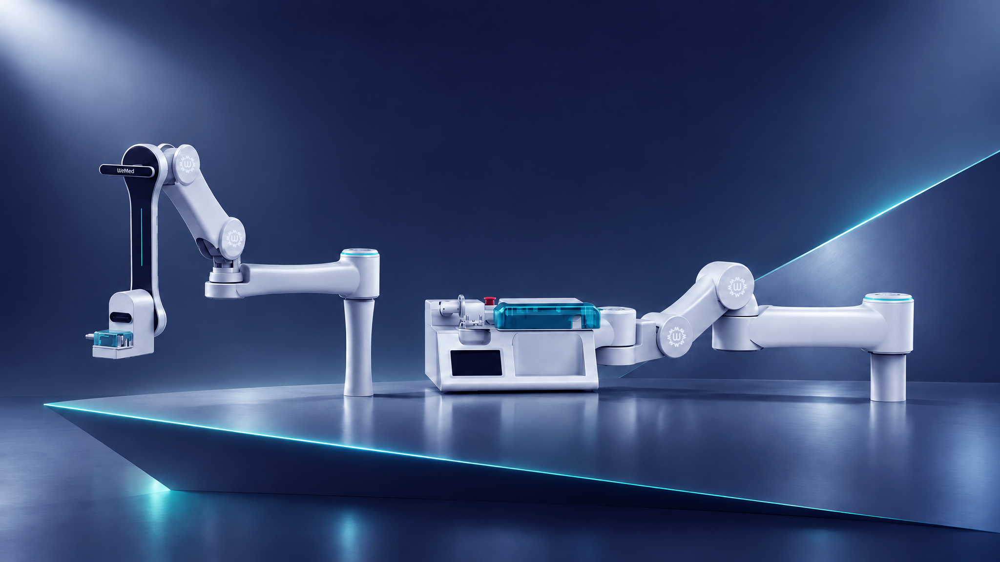

Endovascular Robotics
Beijing · China
ETcath200™ Interventional Robotic System
The world's first interventional robot built on an integrated "Eye–Hand–Brain" architecture. ETcath200 combines DSA imaging, AI-driven lesion recognition, and sub-millimeter robotic catheter control — with pioneering force feedback that restores tactile sensation to the surgeon's console. Designed to reduce radiation exposure and extend complex coronary intervention beyond high-volume centres.
Download Official Brochure (PDF)
◆ NMPA Class III Green Channel
◆ ~100 Invention Patents
Represented by Azadipour across the GCC